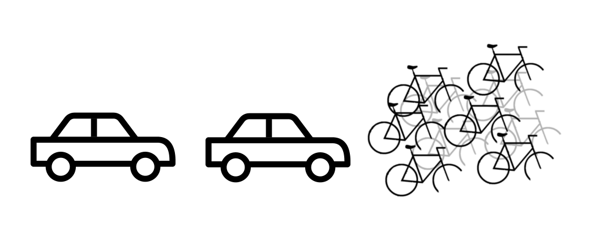

Moins qu'il y a de voitures devant moi, plus vite je pars.
Je fais un effort de ne pas décourager mes voisins de ne pas se déplacer à voiture. Je suis plus tranquille.
La vitesse décourage le choix du vélo et ajoute à mon embouteillage.
Soutenons le passage à 30 km/h en métropole.